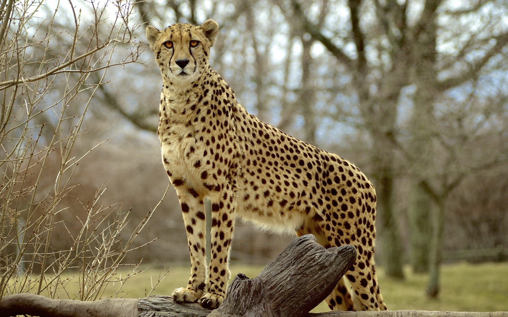
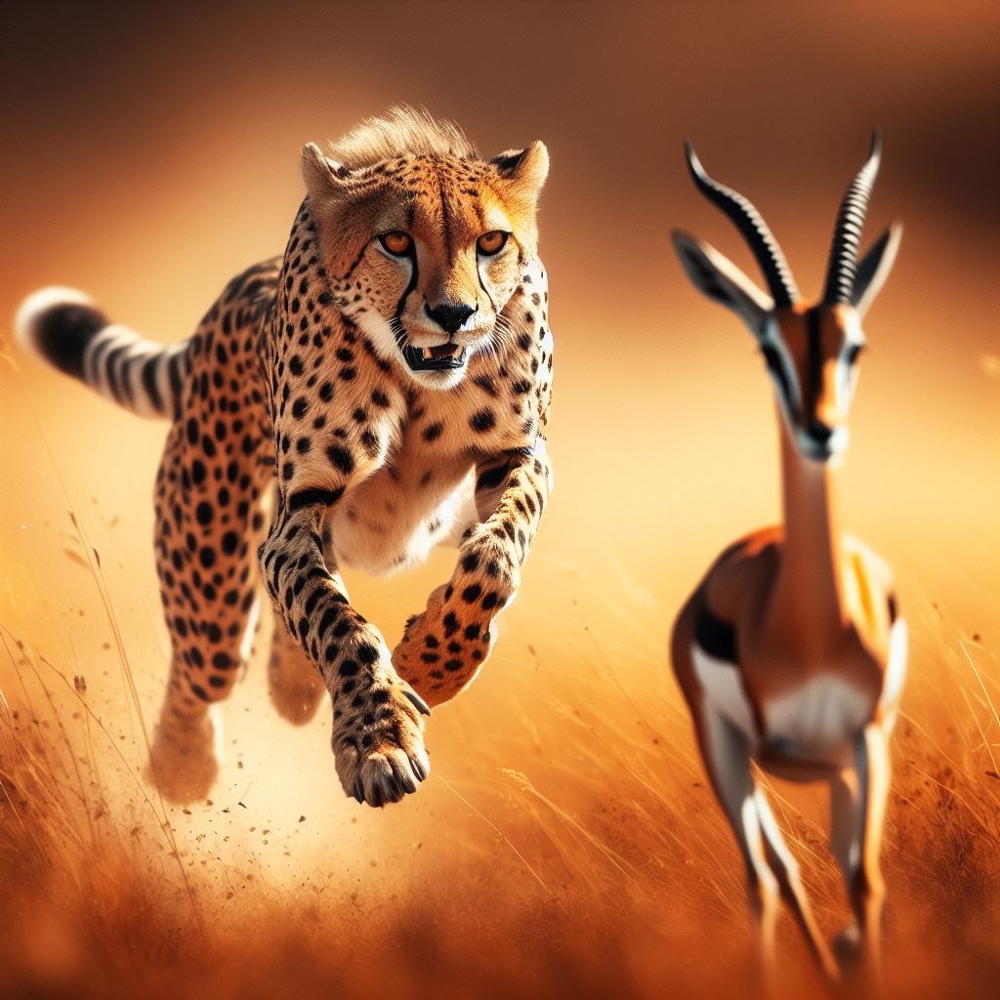

Es un felino de gran tamaño: mide entre 110 y 150 cm de longitud, a lo cual hay que añadir una cola de entre 55 a 80 cm. Su altura a la cruz es de 74 a 90 cm y pesa entre 35 y 60 kg: los machos son de un tamaño ligeramente mayor que las hembras.
El guepardo posee una anatomía especializada para la carrera.
.jpg)
El guepardo es el animal terrestre más veloz del mundo en distancias cortas: corre a una velocidad máxima de entre 29 m/s (104 km/h)(Puede pasar de 0 a 97 km/h en 3 segundos o menos) aunque, si no alcanza su presa en menos de unos 400 metros, abandona la persecución.
La mandíbula y el maxilar son cortos, lo cual reduce el peso de la cabeza sin comprometer la fuerza de mordida, aunque los dientes están reducidos en comparación a otros félidos.

El guepardo es un cazador diurno, el cual se aprovecha tanto de su sigilo como de su piel moteada que le permite camuflarse con la vegetación cercana. Una vez llega el momento indicado, el felino correrá a hacía su presa para abatirla. Sin embargo, debido al gran desgaste de energía que dicha persecución tiene, estas duran menos de 1 minuto.
Acostumbrado a que los carroñeros de mayor envergadura o fuerza (como la hiena, el león, el leopardo o incluso el babuino) le roben las piezas que caza, el guepardo se ha habituado a cazar en las horas centrales del día, cuando los otros depredadores duermen.